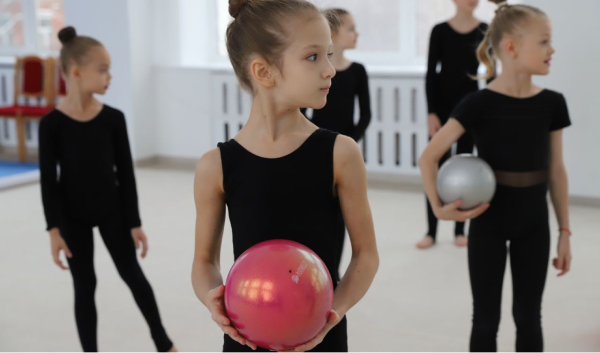

KOROLEVATEAM на выезде
 10.06.2023Вот и подошли к концу наши летние учебно-тренировочные сборы 2023! В этом году они проходили с 12 по 23 июля в городе Сочи. В сборах приняли участие около 70 спортсменок со всей России и других стран по двум направлениям: художественная и воздушная гимнастика. На протяжении 12 дней гимнастки работали по очень насыщенному графику и достигли больших результатов, которые успешно продемонстрировали на открытом уроке.
«Спортивные сборы для спортсмена – это отличная возможность улучшить свои физические и психологические качества, обрести уверенный старт в новом спортивном сезоне. Наши сборы прошли на качественном, высоком уровне. Мы обновили композиции гимнасток, а также составили более 10 новых программ», - отметила главный тренер центра KOROLEVATEAM Екатерина Королева.
Между тренировками дети отдыхали на море, катались на яхте, посетили парк аттракционов, ледовое шоу «Спящая красавица» и дельфинарий, смотрели вместе фильмы и ходили на дискотеку. У каждого участника остались особенные и теплые воспоминания о летних сборах с командой KOROLEVATEAM. Мы поздравляем всех участниц с окончанием летних сборов и желаем только побед в новом соревновательном сезоне!
⟵ На главную